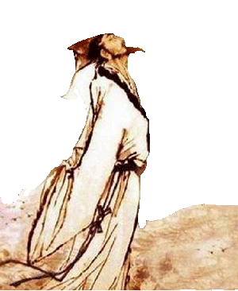

苏轼（1037年1月8日—1101年8月24日），字子瞻,号铁冠道人、东坡居士，世称苏东坡、苏仙 。 汉族，眉州眉山（今属四川省眉山市）人，北宋文学家、书法家、画家 。
进京应试，名动京师：嘉祐元年，苏轼首次出川赴京科考。在欧阳修的称赞下，苏轼声名大噪，每有新作，必会传遍京师。
自请出京，乌台诗案：熙宁四年，苏轼上书谈论新法的弊病，与王安石生出嫌隙。苏轼自请出京任职，颇有政绩。元丰二年，苏轼四十三岁，调任湖州知州。上任后，他即上书一封《湖州谢表》，苏轼是诗人，官样文章，也忘不了加上点个人色彩，说自己“愚不适时，难以追陪新进”等，这些话被新党抓了辫子，惨遭污蔑。苏轼上任才三个月，就被御史台的吏卒逮捕，解往京师，受牵连者达数十人。这就是北宋著名的“乌台诗案”
被贬黄州，东山再起：出狱后，苏轼被降职为黄州团练副使。元丰七年，苏轼奉诏赴汝州就任。汝州路远，且路费已尽，再加上丧子之痛，苏轼上书朝廷，获准先到常州居住。
筑建苏堤，流落儋州：元祐四年，苏轼任龙图阁学士知杭州。由于西湖长期没有疏浚，严重影响农业生产。苏轼来杭州的第二年率众疏浚西湖，并在湖水最深处建立三塔作为标志。元祐六年，他被召回朝。不久因政见不合，被调离朝堂，辗转地方
最后结局：元符三年大赦，北归途中，于建中靖国元年卒于常州。宋高宗即位后，追赠苏轼为太师，谥为“文忠”。